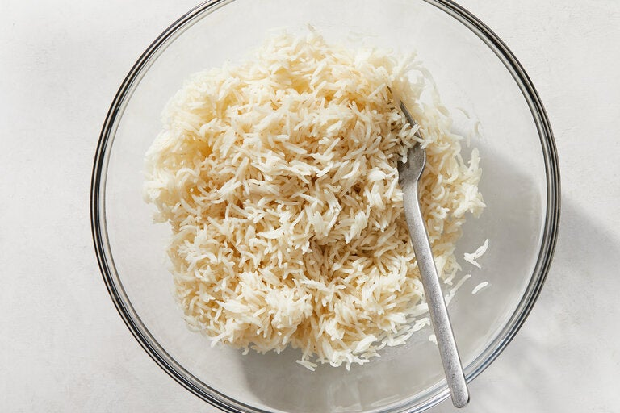

Back
Microwave Rice

Description
It's microwave rice you got this.
Ingredients
- 1 cup long-grain white rice
Steps
- Wash the rice
- Put the rice and 2 cups of water in a big enough bowl
- Microwave uncovered for 15-25 minutes
- If rice is not done, keep microwaving in 1-2 minute increments
- Let rest for another 5 minutes
Stolen from